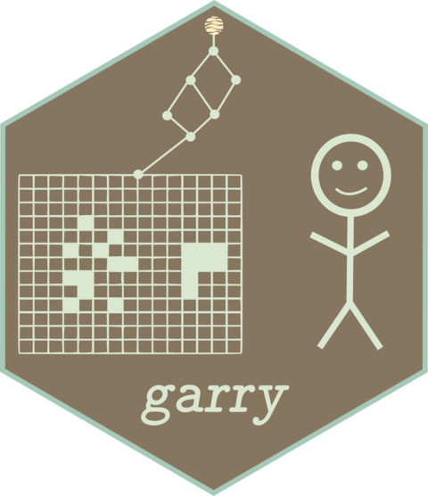

Changelog
garry 0.1.0
The first stable-track release. The API below is the one garry intends to keep; it remains marked experimental while it settles.
Installation
- garry’s XLA stack (anvl >= 0.5.1, pjrt, stablehlo, xlamisc) is installed from the r-xla r-universe, and gdalraster from CRAN (>= 2.7.0). Point pak at the universe first:
options(repos = c(rxla = "https://r-xla.r-universe.dev", getOption("repos"))). - R >= 4.4 is required, as anvl and pjrt require it.
Breaking changes
- Verbs that shared names with terra and raster generics are renamed:
align()isalign_to(),mask()isapply_mask(),focal()isfocal_map()anddraw()isplan_draw(). The grid accessorsxmin(),ymin(),xmax(),ymax()andres()are replaced bygrid_bbox()andgrid_res(), joined bygrid_crs(). -
align_to()defaults toresampling = "near"(was"bilinear"), as the readers do, so categorical and QA rasters keep their values. Pass"bilinear"or"average"for continuous data. -
kalman_llt()takesdtype(wasout_dtype), likekalman_smooth();extract_points()takesx(wasraster) as its first argument. -
reduce_over()accepts only the reducers that execute:"sum","mean","min","max","median"and"count"."prod","quantile","sd","var","any"and"all"were documented but failed atcollect(); they now fail when the node is built (tracked in #32). -
lazy_stac_stack()is removed;lazy_dataset()builds the same stacks. - Engine internals are no longer exported: the daemon task bodies, the low-level GDAL adapter (
gdal_read_window(),gdal_write_window(),gdal_create_output(),gdal_warp_vrt()), bridge plumbing (g_jit(),g_quantize(), raw transport),as_vaster_extent(), and the unusedfusable(),is_barrier(),FusedNodeandcross_grid_window(). - Declared dtypes follow what the kernels compute. A double scalar makes an integer raster f32 (
x * 0.5,x - 100); an integer scalar (2L) keeps it. Sums of 8- and 16-bit integers accumulate in i32 (u32 in i64), where they previously wrapped. - Comparisons return
NaNwhere an operand is nodata, not a valid 0, so anan_rmreduction of a mask skips nodata. -
focal_map(),focal_kernel()andlazy_patch()read integer input as f32, so cells beyond the raster edge areNaN; their output is f32. - A band reduction (
reduce_over(ds, op, "band")) and a dataset scan default to the value bands, leaving the QA band out. - With regime boundaries, the Kalman smoother returns
NaNfor a regime with no observation instead of the previous regime’s extrapolation.
New features
- Base accessors for lazy objects:
dim(),names(),length(),$and$<-, andtime_labels(). - Unary
-and+,!,&and|(on 0/1 masks), logical scalars, andround(x, digits)on lazy rasters.sum(x)and other summaries point atreduce_over(). -
g_round()andg_clamp()join the documentedg_*vocabulary. -
kalman_smooth()gainsbandsfor datasets. - Collected results record their band names, which
as_terra()uses. - A small example raster ships in
inst/extdata; the core verbs have runnable examples.
Performance
Small local jobs no longer pay for the engine built for large remote ones. On the kadyb/raster-benchmark Landsat scene (10 bands of 7771 x 7871 UInt16), single-threaded:
- Plans that only read (sources, warps of them, and band or time stacks) take a new
"read_only"route: each chunk is copied from GDAL straight into the result, or into the output file. In-process, local files decode on every core. With pools running, the read pool reads the chunks in parallel; collected chunks are copied into place as they land, and written ones pass through shared memory to the writer daemon, so compression overlaps the reads. Loading the scene drops from 30.5 s to 5.1 s, a crop from 5.6 s to 1.3 s, a 3x downsample from 6.7 s to 1.9 s and a write from 40.1 s to 6.4 s (3.8 s with pools). Values and files are identical to the compute path;options(garry.read_only = FALSE)turns the route off. - User
creation_optionskeep multi-threaded compression unless they setNUM_THREADS. - Window reads finish in C (nodata, scale and offset, and the transpose to R’s column order), with the same double values: an NDVI drops from 3.8 s to 1.9 s.
Bug fixes
Wrong results:
- Two reads of one file that differed in scale, offset or resampling were merged into one.
-
materialise()kept only band 1 of a band or time stack, and refused integer plans. - South-up rasters (AEF embeddings) were read upside down on unwarped paths.
- A nodata value declared by the user, not the file, leaked into warps.
- Re-reading a rewritten file returned the old pixels from a cached handle.
- The composite fast path computed every band with band 1’s function and mask chain.
-
extract_points()ignored band selection, nodata and scale/offset. -
ds[[name]] <-with band math broke multi-slice datasets. -
align_to()onto a stacked target declared a grid it did not produce. -
stac_query()excluded the last day of the search range. -
stac_sign_mpc()signed every item with the first collection’s token. -
preview()swapped explicitly chosen bands and dropped scale/offset. -
qa_bits()let a repeated bit carry into the next one. -
time_sel()ignored prefix selectors when any selector matched exactly. - Integer focal edges were computed from zeros instead of nodata.
- Gradients skipped NaN only at stage inputs and read sources nearest-neighbour regardless of their resampling.
- Quantized writes to unsigned dtypes failed, and saturated values could collide with nodata.
- Building the OmniCloudMask EdgeNeXt weights from scratch failed.
Failures and hangs:
- A dead compute daemon made every later
collect()hang; runs now fail fast with agarry_pool_error. - A failed writer close (a full disk at the final flush) reported success.
- A failed write left a half-written file at the destination.
-
write_tif(cog = TRUE)on grouped datasets overwrote files and leaked temporaries;{group}in a directory component failed. - Integer overflows in the composite route and the chunk-snapping LCM aborted large plans.
-
plan_draw()was exponential in shared subgraphs. - Distributed runs drew their run id from the user’s RNG stream.
- The cgroup memory probe ignored ancestor limits and counted page cache as used, throttling confined runs to one task at a time.